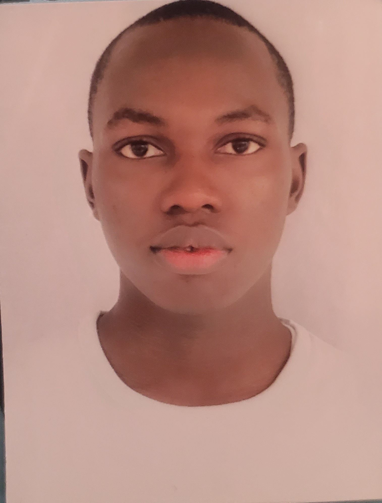

MUSTAPHA ISHAQ ABDULHAFEEZ

ishaqabdulhafeez@gmail.com
About
Contact Address
Personal Statement
- A professional whose aspiration is borne out of the passion to help others.
- Highly motivated with a strong academic background and considerable patient contact experience.
- Thrives in a high-stress environment and good at multi-tasking with excellent interpersonal and organizational skills.
- Dedicated to providing quality patient care.
- Willingness and ability to learn new skills.
Education
- International University of Africa, Khartoum, Sudan.
BACHELOR OF MEDICINE, BACHELOR OF SURGERY (MBBS) - 2019
- Al-Birr Islamic Model School, Akure, Ondo State. (SSS1 - SSS3).
Muslim Unity Secondary Academy, Akure.
West African Examination Council - 2013
- Greater Tomorrow International College, Agbaluku, Arigidi-Akoko, Ondo State. (JSS1 -
JSS2) - 2012
- Greater Tomorrow Nursery and Primary School, Ikare-Akoko, Ondo State.
Primary School Leaving Certificate - 2008
Area of Expertise
- Healthcare
- Patient education and counseling
- Hospital management
- Patient evaluation management
- Communication
- Effective communication
- Multilingual
- Computer literacy
- Microsoft Office Suite
- Web developer
- Graphics designer
Work Experience
Medical and dental Council of Nigeria
Medical officer (2021 - Present)
- Leading and Assisting in both minor and major surgical procedures.
- Provision of clinical assessment and counseling to patients.
- Organizing and active participation in the Centre medical outreach program.
- Day-to-day running of out-patients clinic & management of inpatients.
Awards
- Winner National Level: NNPC/ExxonMobil/STAN National Science Quiz/Project Competition (2008), primary school category
- Winner State Level: Nigerian Turkish International College/National Mathematics Center (NTIC/NMC) Mathematics Competition (2008), primary school category.